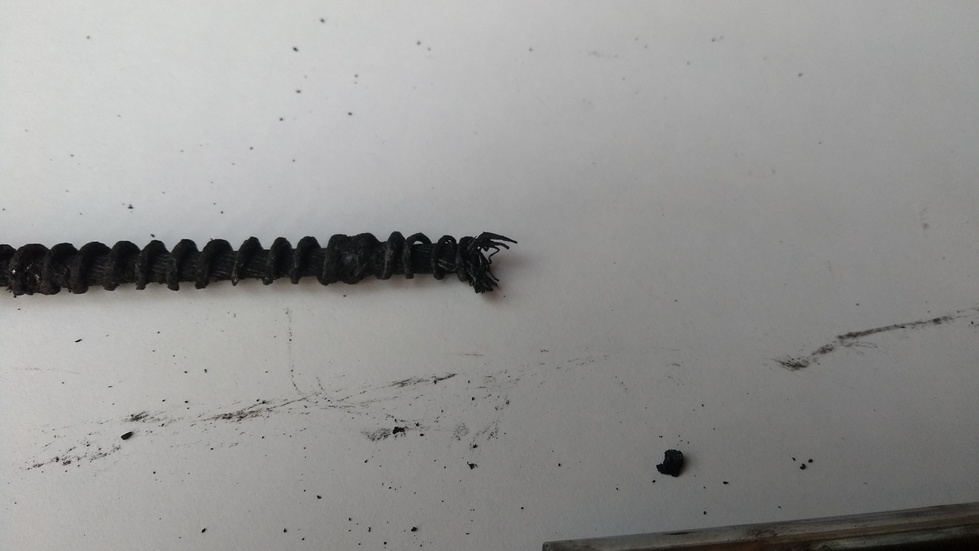
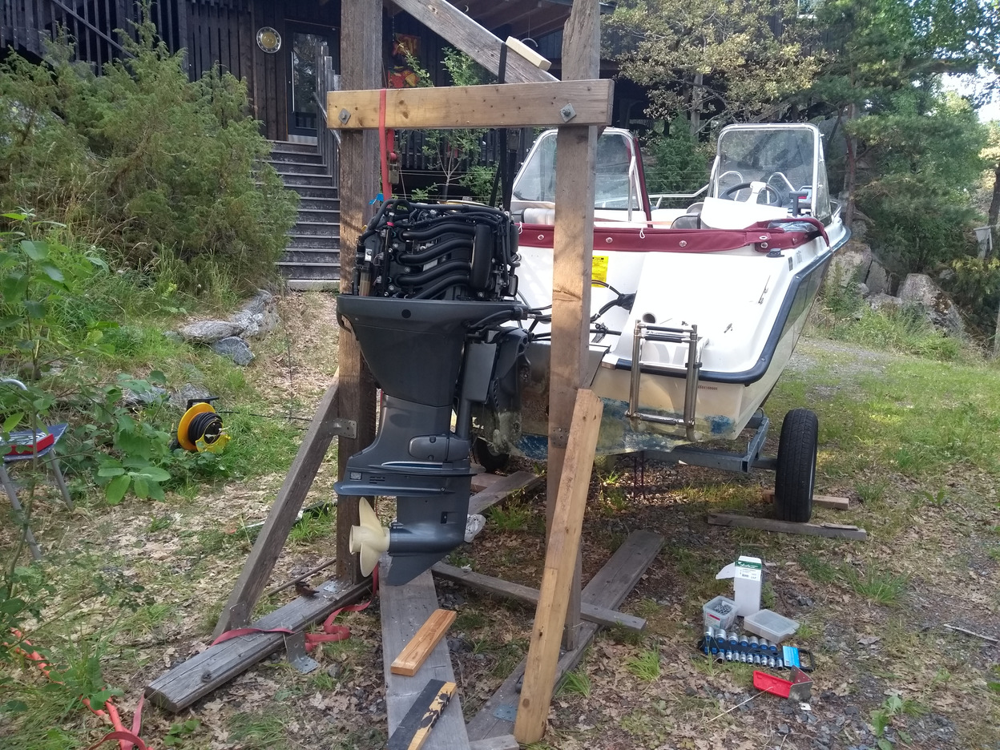

Posted October 14th 2018
The steering on my boat failed without warning while planing at 20 knots in choppy seas. The failure happened when the wire inside the Ultraflex M66 steering cable broke. The cable was 13 years old, it's been used in the (brackish) Baltic sea.
Dangar Marine has a nice video which shows how to replace a similar cable.
The steering cable consists of several layers. Innermost, it's a multi-strand steel cable, probably stainless, about 6mm. Next, there's a spiral-wound single-strand wire which goes all the way along the wire. Outermost, there's a black wire-reinforced plastic tube.
The steering wheel at the helm uses cogs to grip the spiral wound around the innermost cable, allowing it to both push and pull the engine sideways. Pushing steers to starboard, pulling to port.
After replacing the cable with a new one, I chopped the end of the old cable where it goes through the engine bracket. Inside, it's obvious that the inner wire failed where it's pressed into the rod which connects to the engine.

It looks like some moisture got in there over the years, in spite of the sliding coaxial tubes being regularly greased and having an o-ring designed to prevent water from getting in. The water ate away the end of the spiral, where the cable is press-fitted into the stainless rod which goes through the engine tilt tube. Every time I steered to starboard, this caused the inner cable to bulge outwards, bending the strands until they failed by fatigue.
On my boat, the engine has to be lifted off to make enough space to remove the steering rod and permanently attached cable from the engine's tilt tube. A Yamaha F60CET weighs about 110 kg, so it's easy to lift if you have a workshop crane. I built a wooden gantry and used ratchet straps as well as tilting the boat trailer.

Once the old steering cable was free from the engine and helm, I taped a pulling wire to it and pulled it out backwards, i.e. out by the engine and then used the pulling wire to pull the new cable in. Remember to pass it through the hull grommet, otherwise you get to pull it in twice like I did.
I don't think so, short of replacing the cable regularly. The visible parts of the cable at the engine are all stainless steel, so they all looked fine. The steering didn't feel heavy. I greased the exposed parts every season, though perhaps previous owners didn't. The cable can't be disassembled, you have to cut it open to see the rust.
The failure came as a complete surprise: I changed course to steer into a wave and the steering wheel just spun freely. I was probably lucky the boat didn't turn hard. I got home by first puttering along at three knots and steering the engine by pushing and pulling on the cover and then, once out of the sea lane, I jury-rigged a tiller.